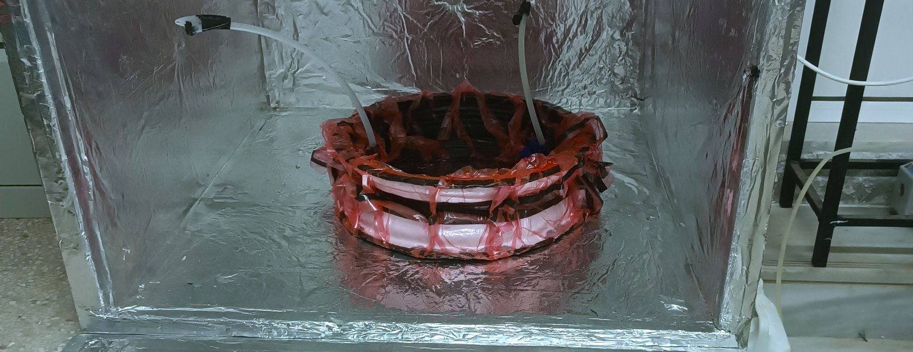
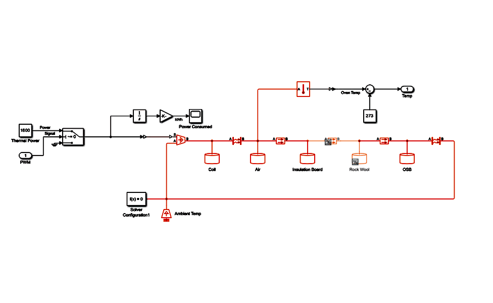
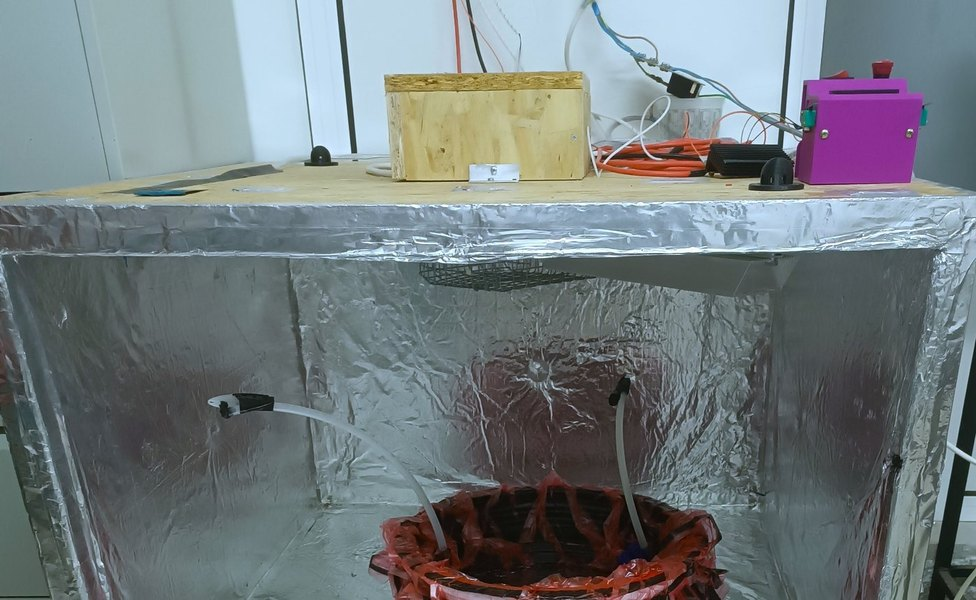

TUCer / Diploma thesis · Technical University of Crete
Composite Curing Oven.
A purpose-built oven to produce the CFRP wheel's carbon-fibre components — thermal design modelled and sized in Simulink before the first panel was cut.

FIG. 01 — A rim curing under vacuum bagging inside the finished oven
Requirements & thermal model
The brief: hold up to 120°C, ramp at up to 3°C/min, and stay within ±1°C once stable — tight enough to cure the wheel's resin reliably without over- or under-curing any part of it.
Before building anything, I modelled the oven as a lumped-parameter thermal network in Simulink/Simscape's Foundation Library thermal domain, with its elements named for the real materials in the build: five thermal masses — Coil, Air, Insulation Board, Rock Wool, and OSB — linked by three conduction paths and two convection paths, with an ambient temperature source and a controlled heat-flow source driving the network. The loop simulated is the loop that got built: commanded cure profile → smoothing → PID → PWM → the plant, with measured temperature fed back to close it.
A 1600 W thermal power source, switched by the controller’s PWM duty cycle and integrated to kWh, turned the model into a sizing tool for insulation and installed power rather than a simple temperature check. Different insulation materials and thicknesses were traded off against that power budget in simulation before the first panel was cut — landing on 1.6 kW installed (2×800 W elements) against a simulated average draw of about 300 W for a typical cure profile, for ramp margin and headroom to scale up later.

Build

The chamber is 940 × 970 × 600 mm (0.55 m³ working volume): an 18 mm OSB shell with seams sealed in aluminium tape, lined with 30 mm of chimney-grade rockwool insulation. Two 1 Ω, 800 W DC resistance elements (2 × 800 W) provide heat, with forced-air circulation and two K-type thermocouples (air and wall) feeding a PID loop that drives a MOSFET power stage via PWM.
In production use
Simulated performance met spec: both temperature plateaus (80°C and 120°C) held with small steady-state error, and the target ramp rate was achievable within the installed power budget.
In real use, the oven ran every one of the wheel's cure cycles — 16 hours at 60°C per the resin manufacturer's spec — and the moulds it cured against showed no deformation or wear across those cycles. Measured thermocouple logs to pair directly against the simulated profile are still on the list to capture.
The cured wheel components went on to the instrumented test bench for energy, inertia and strength testing. No numerical correlation of measured strain or deflection against the FEA was run.